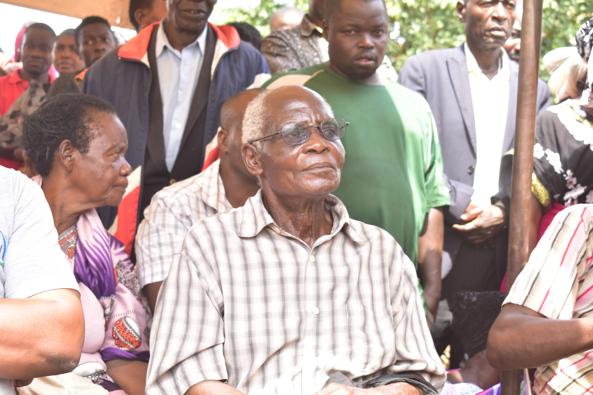

Mzee Samuel Ssebutere

GAYAZA — The community of Gayaza and Kyetume has received the heartbreaking news of the passing of Mzee Samuel Ssebutere, a respected elder and a pillar of the local dairy industry.
Born in 1956, Mzee Ssebutere was widely known for his dedication to his farm and for providing high-quality fresh milk to the residents of Gayaza. His reputation for excellence was such that his presence defined the local market.
— A member of the Kyetume A Community WhatsApp Platform
A Call to Faith
During a vigil held at the family home in Kijjabijo, Lay Reader Wajja Moses asked mourners to put their trust in Christ. Wajja, who served with Mzee’s children at St. Andrew's Church Gayaza, praised the elder for raising children who were active in the church.
"Today as we send off our Mzei, I call upon the community members to stop focusing on fighting for things that are vanity and seek Christ Jesus. In him is all one would need for life," Wajja said.
The outgoing Mayor of Kasangati Town Council, Muwonge Tom, attended the ceremony and reflected on how Mzee always welcomed him with the warmth of a father.
A Devoted Family Man
According to his wife, Mzee Ssebutere passed away following complications arising from high blood pressure. She described her late husband as a "committed husband who gave his all to supporting their children's education."
SCENES FROM THE FAREWELL
Tap images to view full landscape

